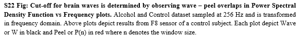
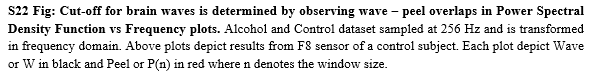
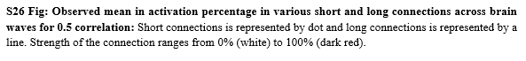
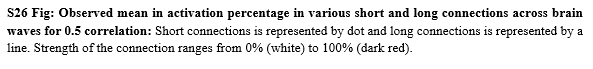

Signal-Processing and Visualization of Electroencephalogram (EEG) data
Detection of long and short connection from EEG signals of 122 Alcoholic and Control subjects recorded across 64 sensors.
This repository contains scripts developed during my 11-month part-time internship at CSIR-CDRI, India.
Dataset: Link
Web-Page
Published Web-Page is available here.
Sampling and Power Spectral Density Analysis
 

Connections derived from cross-correlations
Activation
 

Frequency-band Analysis: Dissolution into Alpha, Beta, Gamma, Theta and Delta waves
Activation of Alpha waves
Similar analysis is performed over Beta, Gamma, Theta and Delta waves.
Publication
Details will be made available after publication of inferences in a relevant journal.